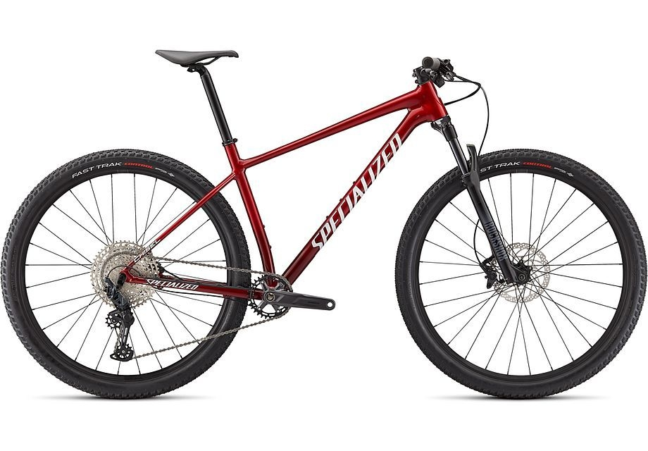

The all-new Specialized Chisel Comp is the perfect bike to begin your journey into XC riding and racing, with all of the features to get you to that elusive "top step" at a price that leaves some jingle jangle left over for race entries. -DAN ROBERTS The Chisel's all-new frame utilizes our D'Aluisio Smartweld technology that moves the hydroformed tube joints away from the areas of the highest stress, making the finished frame's balance of strength, rigidity, and weight more pronounced than any alloy frame in history. This not only makes the Chisel one of the lightest alloy hardtail frames coming in as light as 1,400g, but it also allows for tuned frame stiffness across all sizes.
